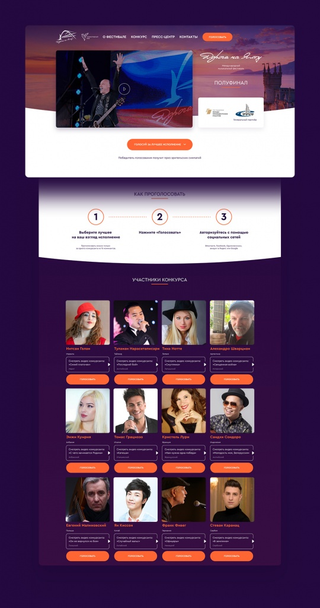
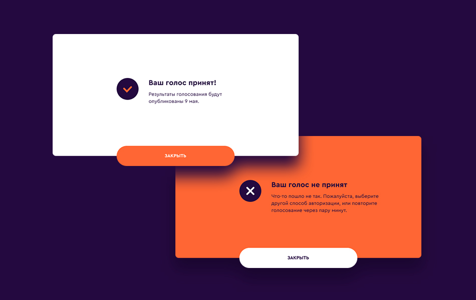
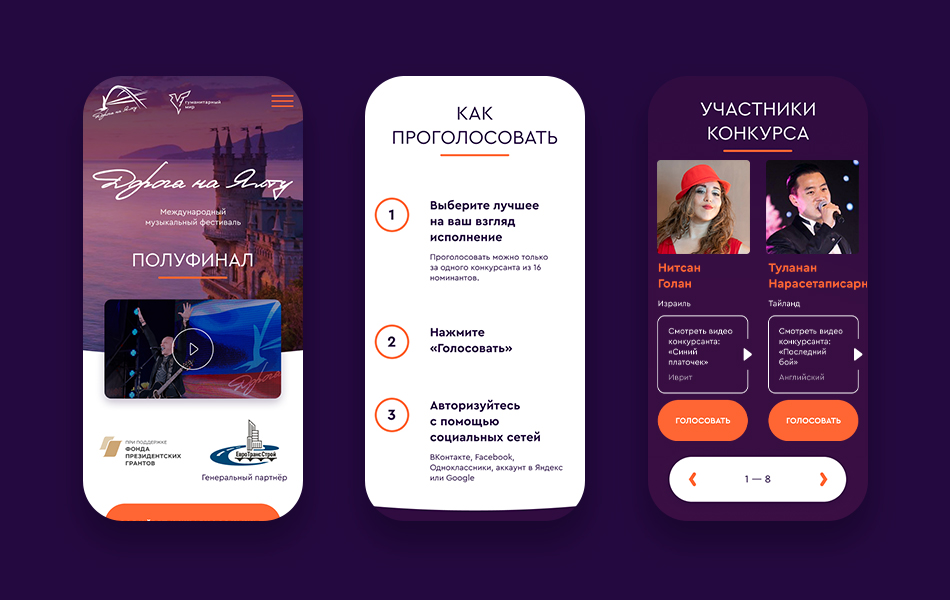
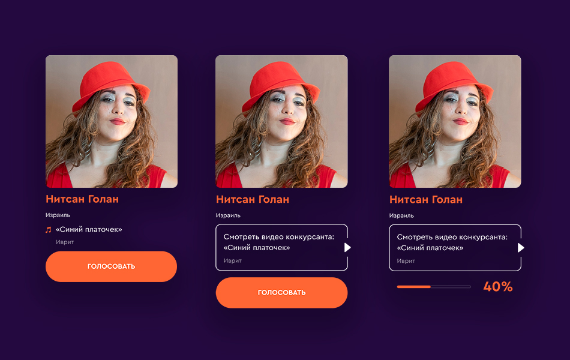

Разработать процедуру голосования Разработать сайт голосования на русском и английском языках Организовать прямой эфир полуфинала на YouTube, запустить трансляцию одновременно с эфиром на телеканале «Культура»
Проектная работа очень похожа на морское путешествие.
Есть проекты сложные, но размеренные, как круиз на огромном комфортабельном лайнере. Иногда штормит, но в целом всё спокойно, и остановить вас может только айсберг. Если экипаж на месте, всё будет хорошо.
Есть небольшие, но «бурлящие» проекты, словно переплываешь Ла-Манш на шлюпке в десятибальный шторм ради срочной доставки пары сэндвичей с тунцом. Нужен рулевой, верный компас, мужество и спокойствие. В таких проектах легко уйти на дно, если не вычерпывать «воду».
Есть рейсы, когда перед отплытием нужно построить роскошную яхту, и прийти на ней в порт назначения при любых обстоятельствах, будь то шторм, метеорит или Бермудский треугольник. В такие рейсы ходят только с лучшими из лучших.
О таком проекте и речь и пойдёт. Хотим рассказать в этом кейсе, как экипаж NUTS Digital справился с разработкой голосования для фестиваля «Дорога на Ялту».

02
Клиент
Международный музыкальный фестиваль «Дорога на Ялту». 15 участников из разных стран поют песни Победы на родных языках.
Оценивает конкурсантов компетентное жюри: Эмир Кустурица, Лев Лещенко, артисты Денис Майданов и Роза Рымбаева, итальянский певец Пупо.
Призовой фонд фестиваля - 80 000 €. Финал конкурса проходит в Ялте. Фестиваль освещается телеканалами «Россия 1», «Культура» и Russia Today, проходит при поддержке Фонда президентских грантов.
03
Проблема
Полуфинал конкурса должен был проходить в Ялте, но тут нагрянул коронавирус, и это стало невозможным. Решили проводить и сам полуфинал, и голосование за приз зрительских симпатий удаленно.
04
Цель
Организовать удаленное голосование за приз зрительских симпатий.
05
Задачи
Разработать процедуру голосования
Разработать сайт голосования на русском и английском языках
Организовать прямой эфир полуфинала фестиваля на YouTube на русском и английском языках, запустить трансляцию одновременно с эфиром на телеканале «Культура»
06
Сроки
Проект реализован за 10 календарных дней.
Организаторы фестиваля связались с нами 24 апреля 2020 года. К разработке приступили 27 апреля.
Полуфинал проходил 8 мая в 20:00, дедлайном проекта обозначили 6 мая.
07
Голосование
Фестиваль международный, все конкурсанты — иностранцы. Голосовать будут как граждане России, так и зарубежные зрители.
Подтверждение через СМС решили не делать, бюджет на СМС не предсказать, времени на заключение договоров и внедрение интеграции не было.
Сошлись на авторизации при голосовании через:
Вконтакте, Однокласники и Яндекс для России и СНГ
Facebook и Google для зарубежных посетителей
электронная почта для зрителей из Китая, потому что всё вышеописанное там под файерволлом.
Изначально хотели Китай авторизовать через WeChat, однако такая интеграция не помещалась в указанные сроки.
Прототип
Разумеется, мы начали с прототипа. Во-первых, визуализация сильно ускоряет понимание и обсуждение конкретных функций и элементов. Во-вторых, проработанный до всех возможных состояний прототип сильно экономит время на разработку дизайна, прототип исправлять быстрее в разы.
Дизайн
Фирменный стиль и некоторые элементы мы взяли с текущего сайта компании. Для максимального ускорения разработки мы отрисовали абсолютно всё, и сразу заполнили макет актуальными логотипами и текстом на русском и английском языках.



Разработка
После согласования дизайна мы параллельно запустили вёрстку страницы голосования и разработку серверной логики сайта.
Для клиентской части использовали VueJS : он отлично подходит для замены контента и ссылок при смене языка без перезагрузки страниц, быстро работает при высокой посещаемости сайта.
Серверную часть сделали на NodeJS. Он идеально подходит как для проектов с интенсивным обменом информацией с пользователями и сторонними источниками данных (калькуляторы, рейтинги, онлайн-чаты, голосования и т.п.), так и для сайтов с высокой посещаемостью благодаря асинхронности выполнения кода.
Защита от «накрутки»
Чтобы минимизировать влияние недобросовестных голосующих, внедрили следующие вещи:
Факт голосования записываем, скрываем кнопку «Голосовать» после первого голосования, выводим результаты.
Проверяем аккаунт при авторизации, выводим ошибку при попытке повторного голосования под тем же аккаунтом или адресом email. Адрес электронной почты проверяется на валидность.
Проверяем IP пользователя, при попытке проголосовать с одного IP более 4-х раз выводим ошибку. Почему не после первого? Чтобы семьи могли проголосовать, если они дома и подключены к одной сети.
Последним рубежом защиты выступает визуальный осмотр таблицы голосов с возможностью деактивировать подозрительные в административной части. Там же и итоговое распределение голосов.
Что ещё сделали
Провели нагрузочное тестирование. Сайт голосования выдерживает до миллиона посетителей в сутки.
Настроили защиту от DDOS-атак через Cloudfare, на всякий случай.
Настроили автоматическое развёртывание полной копии сайта при его отключении для максимальной отказоустойчивости.
Организовали прямой эфир полуфинала фестиваля «Дорога на Ялту» на YouTube на двух языках синхронно с трансляцией на телеканале «Культура».
Внесли вагон и маленькую тележку оперативных изменений, продолжаем поддерживать проект.
Были на связи всю ночь с 8 на 9 мая для максимально оперативной реакции.
Результат
Адаптивный сайт на двух языках, способный выдержать миллион посетителей в сутки. Голосование и запуск трансляции «без сучка и задоринки». Довольный клиент и новый опыт для следующих путешествий. Всё это за 10 дней.